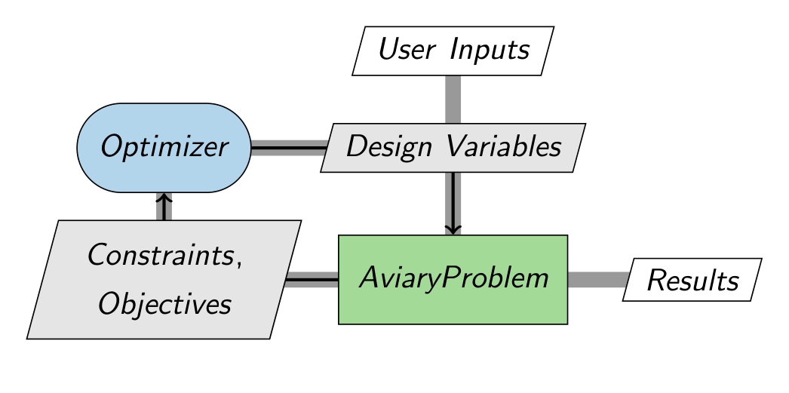
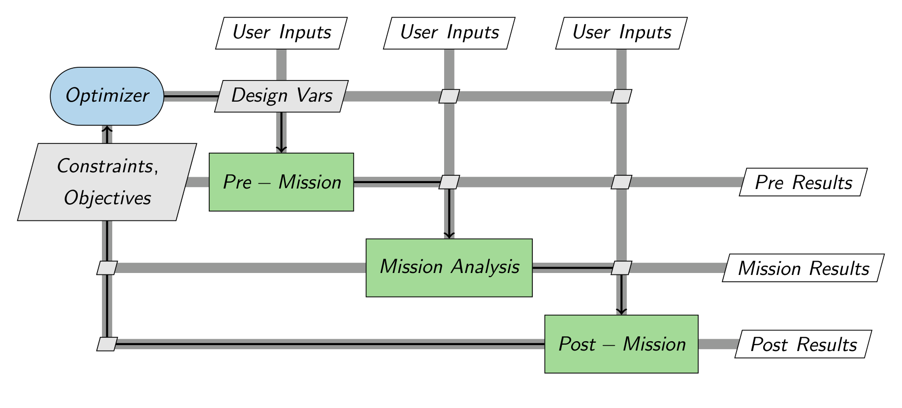

# Testing Cell
from aviary.core.aviary_problem import AviaryProblem
from aviary.utils.doctape import glue_variable, get_class_names
from aviary.utils.functions import get_path
filepath = get_path('core/aviary_problem.py')
av_classes = get_class_names(filepath)
for class_name in av_classes:
glue_variable(class_name, md_code=False)
AviaryProblem
How Aviary Works#
Aviary utilizes a specific structure to organize every individual piece of analysis. This is done to make it easier for the user to control and understand when and where calculations are performed.
The AviaryProblem#
Because Aviary is built using OpenMDAO, everything is contained in OpenMDAO components. The core of Aviary is an extension of OpenMDAO’s Problem class, called the {glue:md}`AviaryProblem`. The AviaryProblem has additional features that help specifically set up a vehicle design problem including flying the mission. For beginning users, the exact details of how the OpenMDAO Problem or the AviaryProblem work isn’t too important. The main thing to understand is that it is essentially the container that holds all the actual equations, calculations, and other analysis.
The following diagram shows how the basic setup of an analysis in Aviary. User inputs are provided, typically in the form of input files. These initial inputs are provided to the AviaryProblem, which performs the calculations to size the vehicle and determine its performance flying the chosen mission. An optimizer is placed “around” the AviaryProblem. The optimizer is automatically set up to solve the type of problem the user requests. The design variables, constraints, and objective are set up by Aviary for you, but they can be completely customized by the user if required. The arrows in the diagram show the flow of information during an Aviary run. There is a loop because the optimizer is iterating on different values for the design variables. When the optimizer is satisfied, the execution ends and Aviary records the final results in its output reports.

Analysis Order#
The AviaryProblem is not just a loose container with every equation randomly thrown in. It enforces a very specific structure for determining when analysis is actually performed. This is critical because the aircraft design loop requires some information to be know before the mission is flown, and other pieces of analysis might need the results of mission analysis. To achieve this, Aviary has three main analysis groups: Pre-Mission, Mission, and Post-Mission. The names are relatively self-explanatory, and divides the analysis components into several categories. Pre- and Post- mission perform all computations that are not time-dependent with the mission, and Mission only performs calculations relevant to estimating aircraft performance over time as it flies. Pre-Mission generally handles calculating aircraft properties, such as determining the aircraft mass build-up, sizing individual components such as the engines, or pre-computing data that will be needed to estimate mission performance such as generating a drag polar table. Post-Mission is less commonly used and is often used for computing metrics based on mission results, like summing all fuel that was burned over the mission.
The diagram below expands out the AviaryProblem to show the analysis groups in order. User Inputs and Design Variables are provided to all three groups, and they all also provide their own set of outputs. Some outputs are used by later groups, and others are purely computed as results to present to the user. This produces the cross-hatch of inputs and outputs you can see going to and from each group. The separation of groups is purely an organizational tool, and it can be seen they are all still highly interconnected.

The important takeaway is that for each iteration of optimization, each group is only executed once, and they are executed in the specific order shown. When adding custom analysis to Aviary, it is critical that you make sure to add your components to the right place. Aviary has a robust interface that makes it easy for users to define this, which will be covered later in the User Guide.